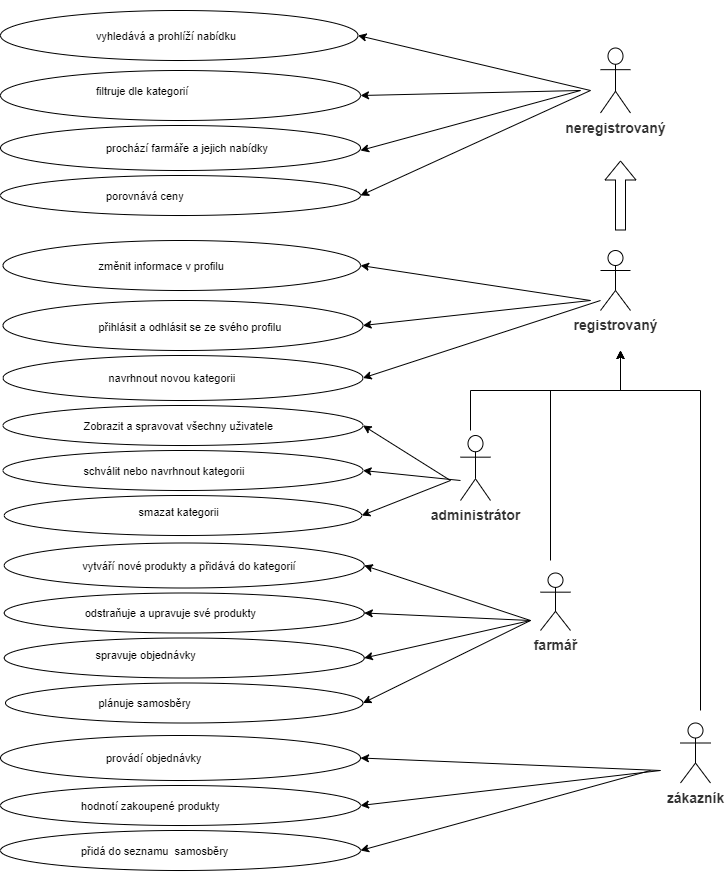
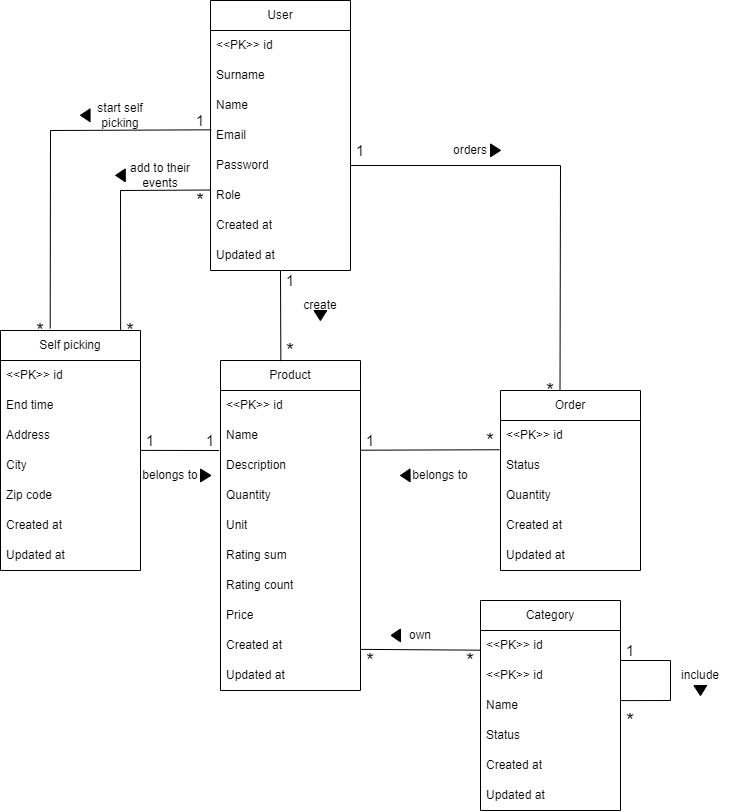

Zelný trh
- Autoři
- Bilyk Vladyslava (kapitan)
xbilyk03@stud.fit.vutbr.cz -
Vytvoření a naplnění databáze. Stránka uživatelského profilu,
implementace registrační logiky. Sekce produktů od farmáře a možnost jejich úpravy.
Logika změny stavu objednávek od uživatelů. Přidání kategorií.
Profil administrátora, logika správy uživatelů.
- Kucher Maryna
xkuche01@stud.fit.vutbr.cz -
Vytváření hlavních stránek aplikace, menu.
Vytváření logiky vyhledávání a filtrování podle různých kritérií.
Produktová stránka a logika objednávání/samosběru. Stránka "přidat produkt".
Sekce objednávky/samosběr na uživatelské stránce.
- URL aplikace
- http://www.stud.fit.vutbr.cz/~xbilyk03/IIS
- (pokud má aplikace více vstupních stránek, napište obdobně další URL)
Uživatelé systému pro testování
Uveďte prosím existující zástupce všech rolí uživatelů.
| Login | Heslo | Role |
|---|
| admin@example.com | adminpassword | Administrátor |
| farmer@example.com | 123456pass | Prodavač |
| customer@example.com | 123456pass | Zákazník |
Diagram případů užití

Video
Přiložte odkaz na komentované video demostrující použití informačního systému. Zaměřte se na případy užití definované zadáním (např. registrace uživatele, správa uživatelů a činnosti jednotlivých rolí). Video nahrajte například na VUT Google Drive, kde ho bude možné přímo spustit z odkazu.
Implementace
- Zobrazení všech produktů je implementováno na stránce vyhledávání.
Za zobrazení produktů, vyhledávání produktů a filtrování podle kategorií,
farmářů nebo cen odpovídá funkce 'search' v kontroleru 'SearchProductController'.
Ze seznamu všech produktů je možné přejít na stránku konkrétního produktu,
za což odpovídá funkce 'showProduct' v kontroleru 'ProductController'.
- Vytváření produktů je dostupné na stránce „Přidat nový produkt“.
Tato stránka je viditelná pouze pro registrované uživatele s rolí farmář.
Implementace probíhá prostřednictvím funkce 'createProduct' v kontroleru 'ProductController'.
Při přidávání produktu je důležité vyplnit vazební tabulku mezi produktem a kategoriemi (vztah „mnoho na mnoho“).
Proto tento kontroler obsahuje pomocnou funkci 'getParentCategories' pro určení všech nadřazených kategorií.
- Na stránce produktu mají registrovaní uživatelé s rolí kupující možnost objednat produkt
(realizováno funkcí 'createOrder' v kontroleru 'OrderController').
- Na stránce produktu mají registrovaní uživatelé s rolí kupující možnost přihlásit se k samosběru (SelfPicking),
pokud je pro tento produkt dostupne. To je implementováno funkcí 'subscribe' v kontroleru 'SelfPickingController'.
- Na stránce uživatele jsou zobrazeny jeho objednávky a/nebo události, na které je přihlášen nebo které vytvořil.
Tato funkcionalita je realizována funkcí 'showOrdersSelfPickings' v kontroleru 'OrderController'.
Databáze
Schéma relační databáze (tabulek v databázi).

Instalace
- Jako platformu pro nasazení aplikace jsme zvolili Koyeb.
Tato platforma jako zdroj využívá repozitář na GitHubu.
Nastavení probíhá pomocí definování proměnných v souboru .env.
Hlavní proměnné pro nasazení aplikace a nastavení prostředí:
- APP_NAME – Název aplikace, například: APP_NAME=MojeAplikace.
- APP_ENV – Režim prostředí: APP_ENV=production pro produkční nasazení, nebo APP_ENV=local pro lokální testování.
- APP_KEY – Bezpečnostní klíč generovaný příkazem php artisan key:generate.
- APP_DEBUG – Debug režim (true nebo false): APP_DEBUG=false.
- APP_URL – URL aplikace
Build aplikace:
composer install --no-dev --optimize-autoloader
Spuštění aplikace na platformě Koyeb :
php artisan serve --host=0.0.0.0 --port=$PORT
- Softwarové požadavky: PHP: 8.2,
Laravel Framework: 11.9
- Databáze byla vytvořena na platformě Aiven.
Připojení k databázi se provádí v souboru .env pomocí následujících proměnných:
- DB_CONNECTION=mysql
- DB_HOST=mysql-1613c158-maryna-53b0.f.aivencloud.com
- DB_PORT=22618
- DB_DATABASE=defaultdb
- DB_USERNAME=avnadmin
- DB_PASSWORD=heslo_databaze
Vytvoření tabulek v databázi :
php artisan migrate
Spuštění seedů a naplnění databáze výchozími daty :
php artisan db:seed
Známé problémy
Zde popište, které body zadání nejsou implementovány a z jakého důvodu. Např. „Z časových důvodů nebyla implementována správa uživatelů.” Pomůžete tím zrychlit hodnocení, když neimplementované funkce nebudeme muset dlouze hledat.